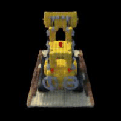

NeRF: Neural Radiance Fields
Implemented a NeRF pipeline from scratch including ray sampling, volumetric rendering, and camera calibration for 3D scene reconstruction.
View project →UC Berkeley EECS graduate with experience in deep learning, computer vision, and signal processing. I build AI systems that work in the real world.
Implemented a NeRF pipeline from scratch including ray sampling, volumetric rendering, and camera calibration for 3D scene reconstruction.
View project →Built a U-Net from scratch for flow matching on MNIST. Used DeepFloyd IF from Hugging Face for visual anagrams, hybrid images, and inpainting.
View project →Led motion control development for a Sawyer robot that plays pool, including vision-based ball detection and trajectory planning.
View project →Explored mechanistic interpretability in LLaMA 3.1 using linear probes and activation steering to study goal-directed behavior in language models.
View project →An instructional operating system implementing multithreading, synchronization, user programs with system calls, and a file system supporting concurrency.
View project →Open to full-time opportunities in ML/AI engineering. Feel free to reach out.
hello@example.com →